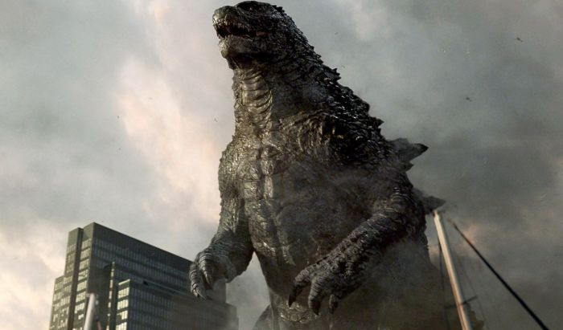
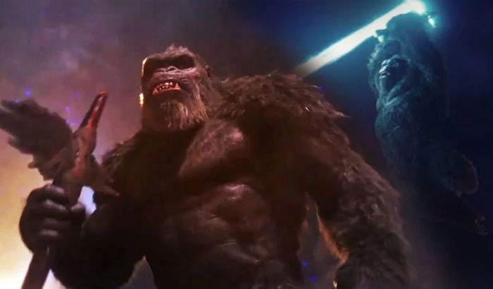
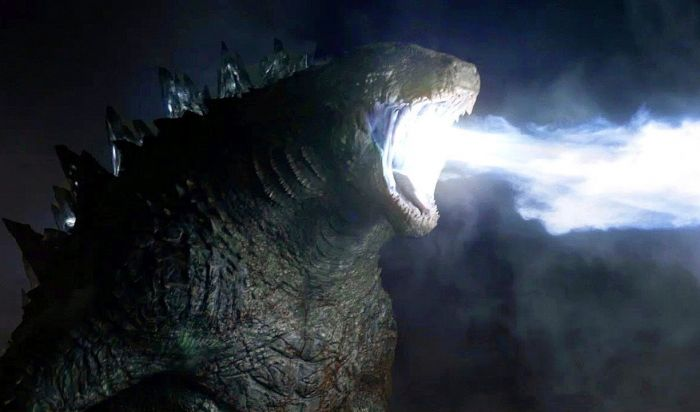

Godzilla vs Kong, Siapa Monster Terkuat Se-jagat Raya?
By Yuni Usmanda / 27 Januari 2021
Beberapa waktu lalu, kita akhirnya diperlihatkan dengan trailer perdana dari film Godzilla vs Kong menjadi bagian dari MonsterVerse milik Legendary Entertainment. Rencananya, film tersebut akan dirilis di bioskop sekaligus layanan streaming HBOMax mulai 26 Maret 2021.
Lewat trailer perdananya tersebut, kita disajikan dengan pertarungan seru antara dua monster raksasa yang sudah terbilang ikonis di dunia perfilman, yaitu Godzilla dengan King Kong. Meski belum diketahui apa penyebab pertarungan mereka di Godzilla vs Kong, kemungkinan besar keduanya memperebutkan gelar sebagai monster terkuat di Bumi.
Lantas, siapakah yang pantas menjadi monster terkuat se-jagat raya di Godzilla vs Kong? Daripada penasaran, langsung saja kalian simak pembahasan kelebihan dan kelemahan keduanya di bawah ini!
Asal-Usul

| GODZILLA | KONG |
|---|---|
| Dalam versi orisinalnya, Godzilla merupakan monster yang tercipta ketika sebuah spesies reptil purbakala mengalami mutasi karena radiasi nuklir yang diciptakan oleh manusia. Namun, asal-usul tersebut enggak digunakan pada sosok Godzilla yang ada di MonsterVerse. Soalnya, dia dikisahkan sebagai makhluk raksasa yang sudah ada di Bumi sejak ratusan juta tahun yang lalu, jauh sebelum adanya manusia. | Asal-usul King Kong di MonsterVerse sebenarnya hingga saat ini belum jelas meski sudah pernah muncul dalam film Kong: Skull Island (2017). Bahkan, keberadaan Kong bisa dibilang enggak diketahui oleh manusia sebelum akhirnya terungkap oleh sekelompok ilmuwan yang datang ke Skull Island yang merupakan tempat asal dari sang monyet raksasa. |
| Godzilla pun dikisahkan berhibernasi selama jutaan tahun sebelum akhirnya ada uji coba nuklir pada 1954. Hal ini karena Godzilla memiliki reaksi terhadap nuklir dan bahkan kalau bisa dibilang mendapat kekuatannya dengan menyerap energi tersebut. Setelah itu, Godzilla pun kembali hibernasi dan baru lagi muncul ke permukaan pada 2014 dan 2019 ketika ada monster lain yang mengganggu tatanan kehidupan Bumi. | Kong diduga merupakan mutasi dari spesies primata yang melakukan evolusi pada zaman purbakala atau jutaan tahun yang lalu. Meski begitu, dalam film Skull Island yang mengambil latar waktu pada 1973, Kong dikisahkan menjadi satu-satunya yang tersisa dari spesiesnya. Asal-usul ataupun alasan di balik kepunahan spesiesnya pun kemungkinan besar baru akan terungkap di film Godzilla vs Kong mendatang. |
Kecerdasan

| GODZILLA | KONG |
|---|---|
| Dalam penampilannya di film Godzilla (2014) dan Godzilla: King of the Monsters (2019) sang kadal raksasa memang terlihat jarang memanfaatkan keberadaan sekitarnya untuk menyerang musuh. Tak cuma itu, Godzilla juga jarang menghindari serangan musuh dan malah seolah menerima hantaman secara sukarela. | Kecerdasan Kong sebagai bagian dari mamalia pun sudah beberapa kali terlihat dalam filmnya. Contohnya saat Kong menggunakan pohon ataupun rantai yang masih mengait dengan turbin kapal sebagai sebuah senjata untuk menyerang monster Skullcrawlers dalam film Kong: Skull Island. |
Kemampuan Bertarung

| GODZILLA | KONG |
|---|---|
| Godzilla juga punya ‘jurus’ ampuh untuk menyerang musuh, yaitu napas atomik yang berwujud radiasi berwarna biru dan disemburkan dari mulutnya.Selain itu, Godzilla juga dikenal memiliki gerakan ikonis dengan cara melibaskan ekor raksasanya untuk menyerang musuh. | Faktor paling berpengaruh dalam kemampuan bertarung Kong yang dahsyat masih berkaitan dengan tingkat kecerdasannya yang tinggi. Sebab, seperti yang sudah dibahas pada poin sebelumnya, kecerdasannya tersebut membuat Kong dapat memanfaatkan situasi di sekitarnya untuk menyerang musuh. Hal ini dapat dilakukan dengan menjadikan sejumlah objek di sekitar sebagai sebuah senjata./td> |
***